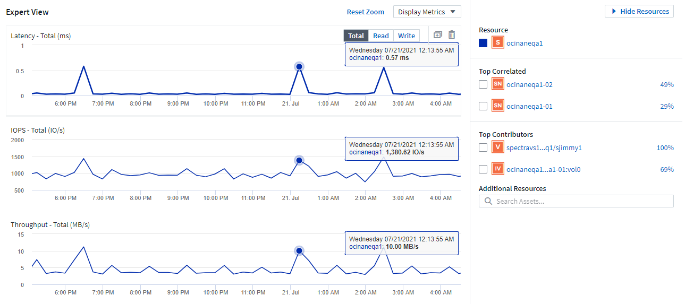
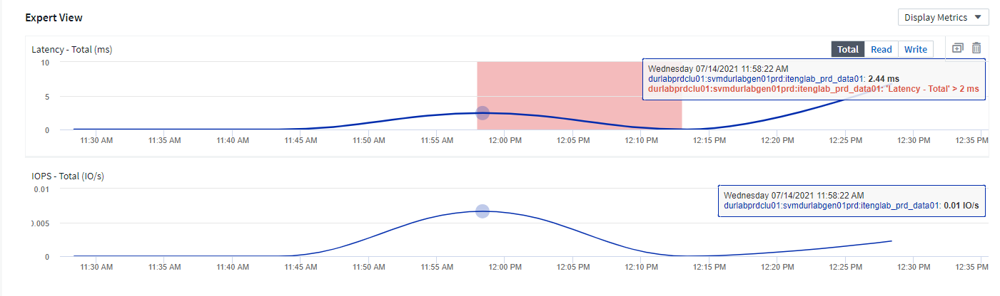

安全性
安全性
专家视图
 建议更改
建议更改
通过资产页面的 "Expert View" 部分，您可以根据任意数量的适用指标查看基础资产的性能样本，并查看性能图表中选定的时间段以及与此时间段相关的任何资产。 在数据收集器轮询和获取更新后的数据时、图表中的数据会自动刷新。
使用专家视图部分
以下是存储资产页面中的专家视图部分示例：

您可以选择要在性能图表中查看选定时间段的指标。单击 _Display Metrics 下拉列表，然后从列出的指标中进行选择。
"* 资源 * " 部分显示基本资产的名称以及性能图表中表示基本资产的颜色。如果 "Top correlated" 部分不包含要在性能图表中查看的资产，则可以使用 "* 其他资源 * " 部分中的 "* 搜索资产 " 框来查找该资产并将其添加到性能图表中。添加资源时，这些资源将显示在 Additional Resources 部分中。
如果适用， " 资源 " 部分还会显示以下类别中与基础资产相关的任何资产：
-
相关度最高
显示与基本资产的一个或多个性能指标相关性（百分比）较高的资产。
-
主要贡献者
显示对基本资产贡献（百分比）的资产。
-
工作负载争论
显示影响或受主机、网络和存储等其他共享资源影响的资产。这些资源有时称为_greedys_和_degraded_resources。
专家视图中的警报
警报还会显示在资产登录页面的 "Expert View" 部分中，其中显示了警报的时间和持续时间以及触发警报的监控条件。

专家视图指标定义
资产页面的 "Expert View" 部分会根据为资产选择的时间段显示多个指标。每个指标都会显示在自己的性能图表中。您可以根据要查看的数据在图表中添加或删除指标和相关资产。您可以选择的指标因资产类型而异。
* 度量值 * |
* 问题描述 * |
BB 信用零 Rx ， Tx |
取样期间接收 / 传输缓冲区到缓冲区信用计数过渡到零的次数。此度量指标表示连接的端口由于缺少可提供的信用值而不得不停止传输的次数。 |
BB 信用零持续时间 Tx |
采样间隔内传输 BB 信用值为零的时间（以毫秒为单位）。 |
缓存命中率（总计，读取，写入） % |
导致缓存命中的请求百分比。对卷的命中次数与访问次数之比越高，性能越好。对于不收集缓存命中信息的存储阵列，此列为空。 |
缓存利用率（总计） % |
导致缓存命中的缓存请求的总百分比 |
类 3 丢弃 |
光纤通道 3 类数据传输丢弃的计数。 |
CPU 利用率（总计） % |
活动使用的 CPU 资源量，占总可用资源的百分比（对于所有虚拟 CPU ）。 |
CRC 错误 |
取样期间端口检测到的具有无效循环冗余检查（ CRC ）的帧数 |
帧速率 |
以每秒帧数（帧数 / 秒）为单位的传输帧速率 |
帧大小平均值（ Rx ， Tx ） |
流量与帧大小的比率。通过此指标，您可以确定网络结构中是否存在任何开销帧。 |
帧大小太长 |
过长的光纤通道数据传输帧的数量。 |
帧大小太短 |
太短的光纤通道数据传输帧的数量。 |
I/O 密度（总，读取，写入） |
IOPS 数除以卷，内部卷或存储元素的已用容量（从数据源的最新清单轮询中获取）。以每 TB 每秒 I/O 操作数为单位。 |
IOPS （总计，读取，写入） |
单位时间内通过 I/O 通道或该通道一部分的读 / 写 I/O 服务请求数（以每秒 I/O 数为单位） |
IP 吞吐量（总吞吐量，读取吞吐量，写入吞吐量） |
Total ：以 MB/ 秒为单位传输和接收 IP 数据的聚合速率。 |
读取： IP 吞吐量（接收）： |
接收 IP 数据的平均速率，以 MB/ 秒为单位。 |
写入： IP 吞吐量（传输）： |
IP 数据的平均传输速率，以 MB/ 秒为单位。 |
延迟（总计，读取，写入） |
延迟（ R&W ）：在固定时间内向虚拟机读取或写入数据的速率。此值以 MB/ 秒为单位。 |
延迟 |
数据存储中虚拟机的平均响应时间。 |
前几个延迟： |
数据存储中虚拟机的最长响应时间。 |
链路故障 |
取样期间端口检测到的链路故障数量。 |
链路重置 Rx ， Tx |
取样期间接收或传输链路重置的数量。此指标表示连接的端口对此端口发出的链路重置次数。 |
内存利用率（总计） % |
主机使用的内存阈值。 |
部分读 / 写（总计） % |
读 / 写操作跨越 RAID 5 ， RAID 1/0 或 RAID 0 LUN 中任何磁盘模块上的条带边界的总次数通常，条带跨越并不有益，因为每个条带跨越都需要额外的 I/O百分比较低表示条带元素大小效率较高，并表示卷（或 NetApp LUN ）对齐不正确。对于 CLARiiON ，此值是条带跨越次数除以 IOPS 总数。 |
端口错误 |
报告取样期间 / 给定时间范围内的端口错误。 |
信号丢失计数 |
信号丢失错误的数量。如果发生信号丢失错误，则表示没有电气连接，并且存在物理问题。 |
交换速率（总速率，速率，出速率） |
在取样期间，从磁盘到活动内存的内存换入，移出或同时从磁盘到活动内存的速率。此计数器用于计数适用场景虚拟机。 |
同步丢失计数 |
同步丢失错误的数量。如果发生同步丢失错误，则硬件无法识别流量或锁定到该流量上。所有设备可能使用的数据速率不同，或者光纤或物理连接的质量可能较差。端口必须在每次出现此类错误后重新同步，这会影响系统性能。以 KB/ 秒为单位 |
吞吐量（总吞吐量，读取吞吐量，写入吞吐量） |
在响应 I/O 服务请求的固定时间内传输，接收或同时接收数据的速率（以 MB/ 秒为单位）。 |
丢弃帧超时— Tx |
因超时而丢弃的传输帧数。 |
流量速率（总计，读取，写入） |
取样期间传输，接收或同时接收的流量，以每秒兆字节为单位。 |
流量利用率（总计，读取，写入） |
取样期间接收 / 传输 / 总流量与接收 / 发送 / 总容量之比。 |
利用率（总计，读取，写入） % |
用于传输（ Tx ）和接收（ Rx ）的可用带宽百分比。 |
写入待处理（总计） |
待处理的写入 I/O 服务请求数。 |
使用专家视图部分
通过 "Expert View" 部分，您可以根据所选时间段内任意数量的适用指标查看资产的性能图表，并添加相关资产以比较和对比不同时间段内的资产和相关资产性能。
-
通过执行以下任一操作找到资产页面：
-
搜索并选择特定资产。
-
从信息板小工具中选择资产。
-
查询一组资产，然后从结果列表中选择一个。
此时将显示资产页面。默认情况下，性能图表显示为资产页面选择的时间段的两个指标。例如，对于存储，性能图表默认显示延迟和总 IOPS 。" 资源 " 部分显示资源名称和 " 其他资源 " 部分，您可以通过此部分搜索资产。根据资产的不同，您可能还会在 "Top correlated" ， "Top contributor" ， "Greedy" 和 "Degraded" 部分中看到资产。如果没有与这些部分相关的资产，则不会显示这些资产。
-
-
您可以通过单击 * 显示指标 * 并选择要显示的指标来为指标添加性能图表。
对于选定的每个指标，系统会显示一个单独的图表。该图表显示选定时间段的数据。您可以通过单击资产页面右上角的另一个时间段或放大任何图表来更改时间段。
单击 * 显示指标 * 以取消选择任何图表。此指标的性能图表将从 "Expert View" 中删除。
-
您可以将光标置于图表上方，并根据资产单击以下任一项来更改为该图表显示的度量数据：
-
读取，写入或总计
-
Tx ， Rx 或 Total
默认值为 Total 。
您可以将光标拖动到图表中的数据点上，以查看指标值在选定时间段内的变化情况。
-
-
在资源部分中，您可以将任何相关资产添加到性能图表中：
-
您可以在 "Top correlated" ， "Top contributors" ， "Greedy" 和 " Degraded* " 部分中选择相关资产，以便将该资产中的数据添加到每个选定指标的性能图表中。
选择资产后，该资产旁边会显示一个色块，用于指示其数据点在图表中的颜色。
-
-
单击 * 隐藏资源 * 以隐藏其他资源窗格。单击 * 资源 * 以显示窗格。
-
对于显示的任何资产，您可以单击资产名称以显示其资产页面，也可以单击资产与基本资产关联或贡献的百分比以查看有关该资产与基本资产关系的详细信息。
例如，单击相关度最高的资产旁边的链接百分比将显示一条信息性消息，其中比较了该资产与基本资产的关联类型。
-
如果 Top correlated 部分不包含要在性能图表中显示以进行比较的资产，则可以使用 Additional Resources 部分中的 Search assets 框来查找其他资产。
-
选择资产后，它将显示在 Additional Resources 部分中。如果不再需要查看有关资产的信息，请单击  。
。